Behind the curtain
CREDITS & thanks.
A cultural exchange is built by many hands. The photographs on this prototype show real places and objects, and are used under the licenses below. Product names, makers and prices are invented for the demo — the craft is real.
Photography
16 images · Wikimedia Commons
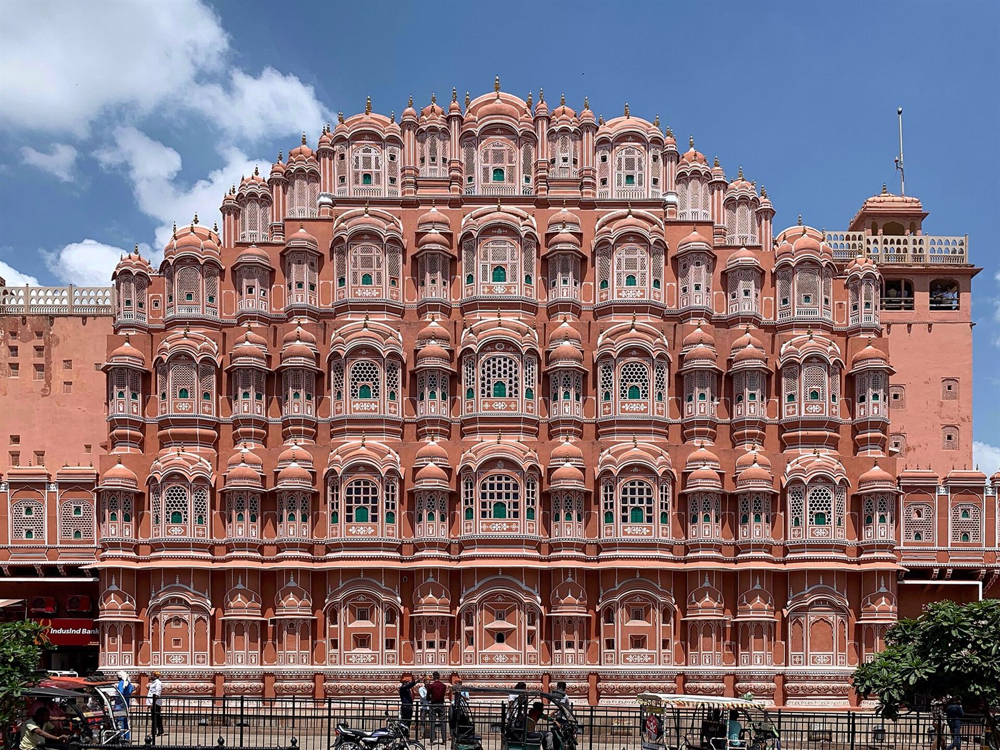
Hawa Mahal, Jaipur
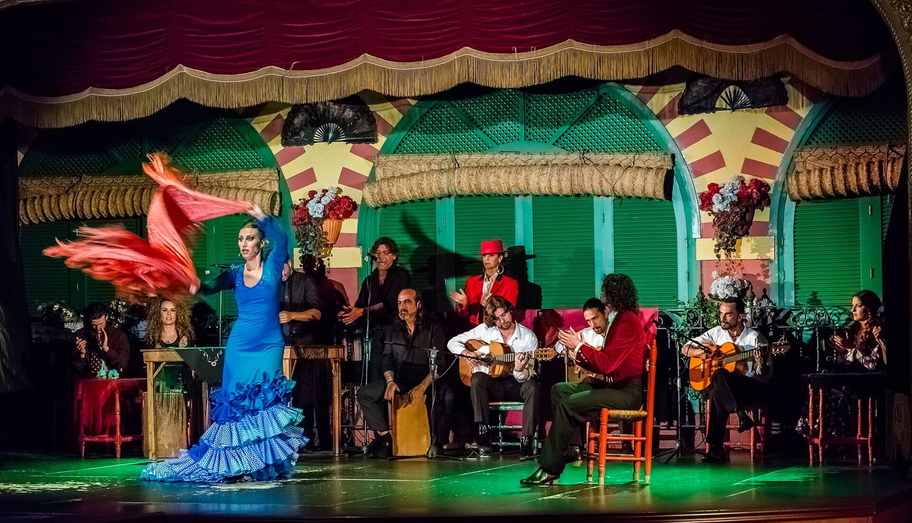
Flamenco en el Palacio Andaluz, Sevilla
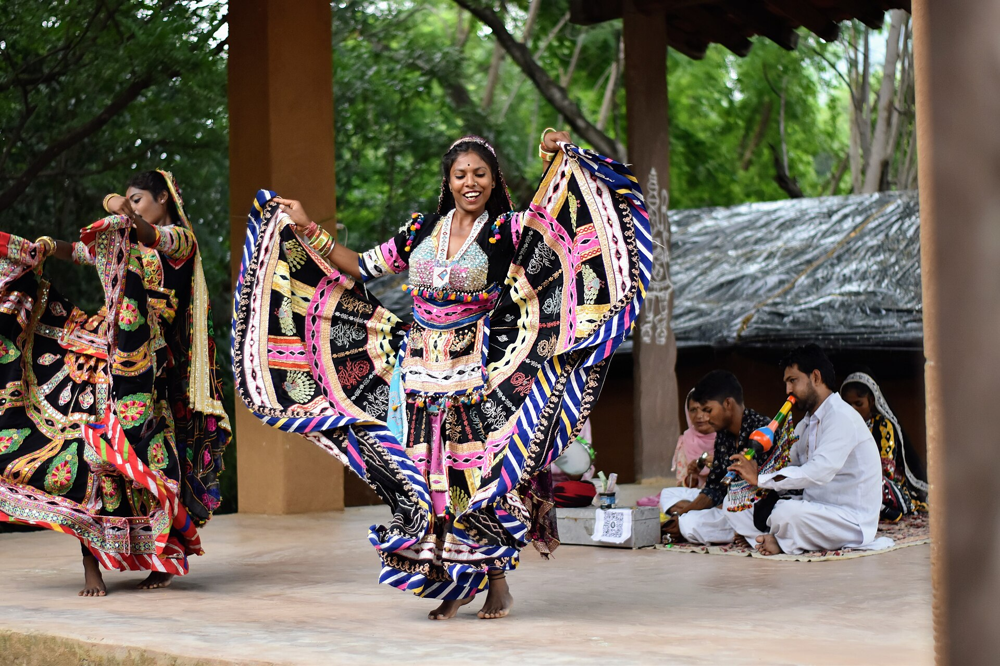
Kalbelia dancers, Rajasthan
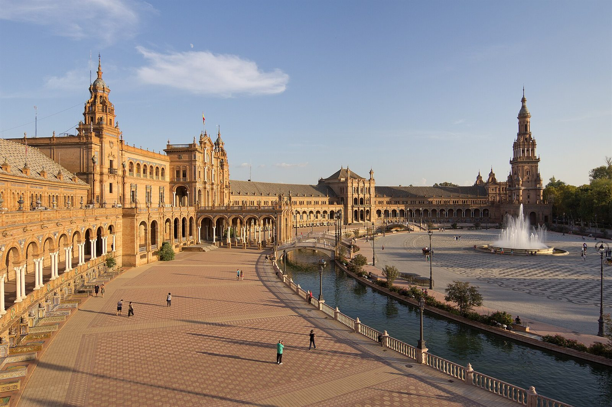
Plaza de España, Sevilla
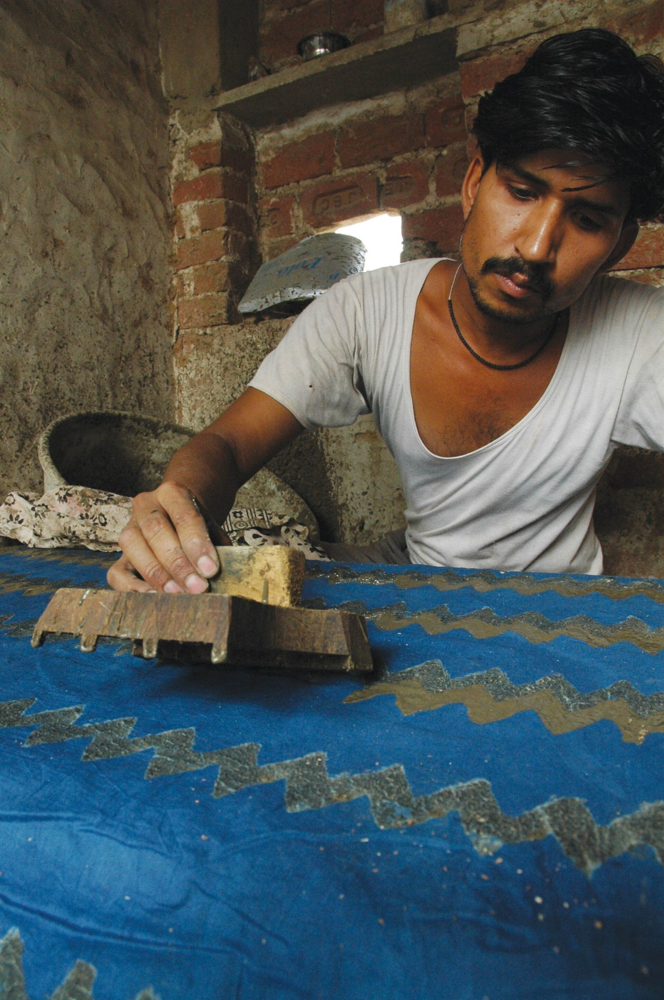
Hand printing with a wooden block
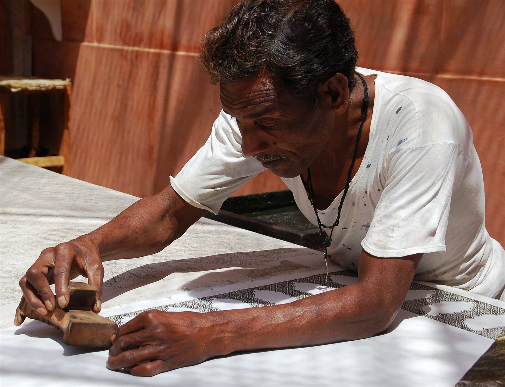
Printing with a hand-carved block
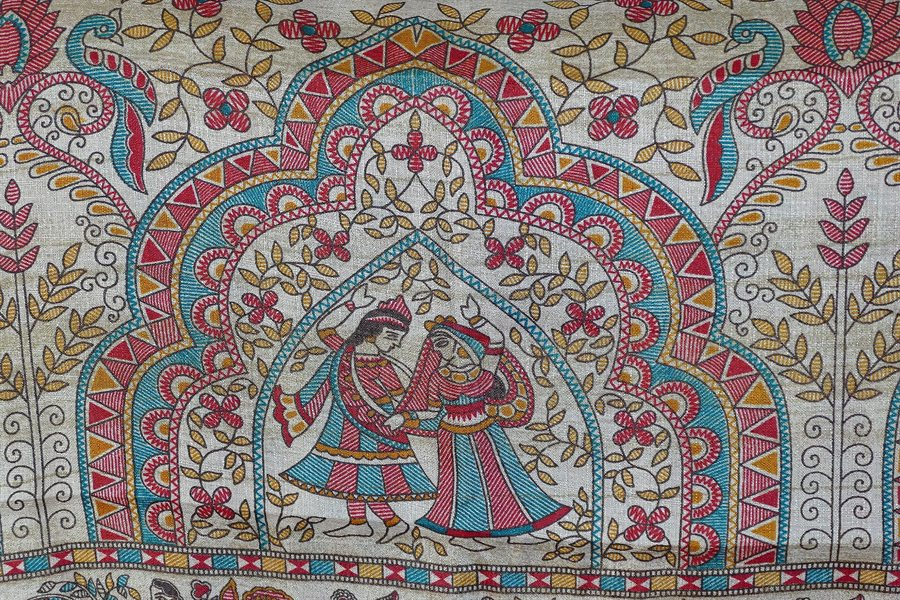
Coloured silk scarf from India
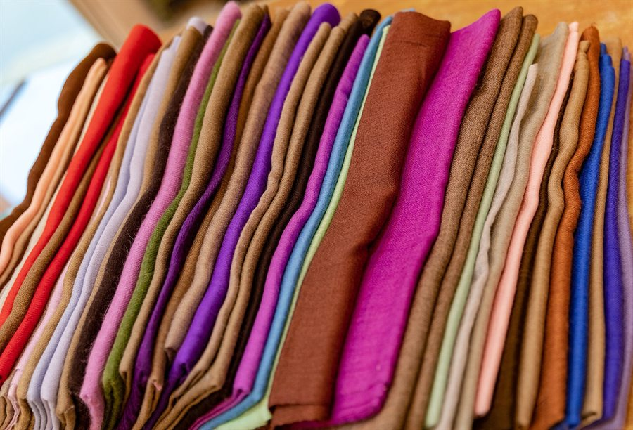
Goods in a textile shop, Jaipur
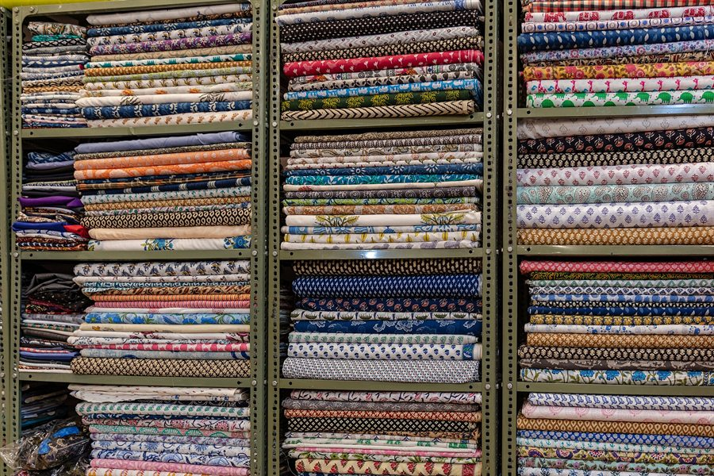
Textile shop in Jaipur
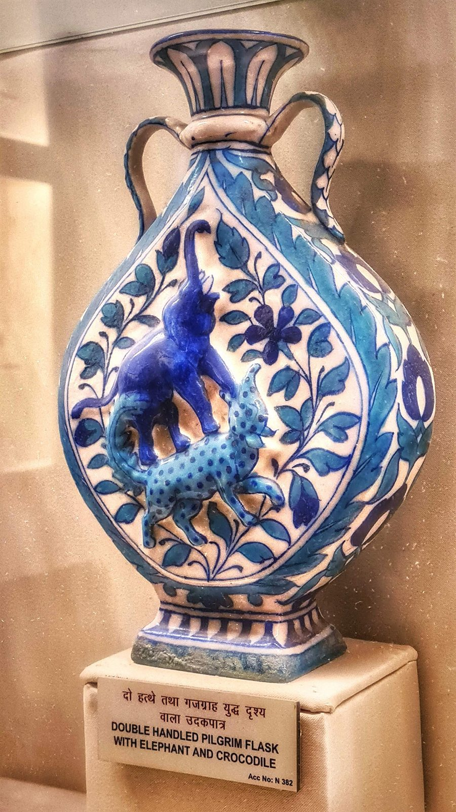
Blue pottery pilgrim flask
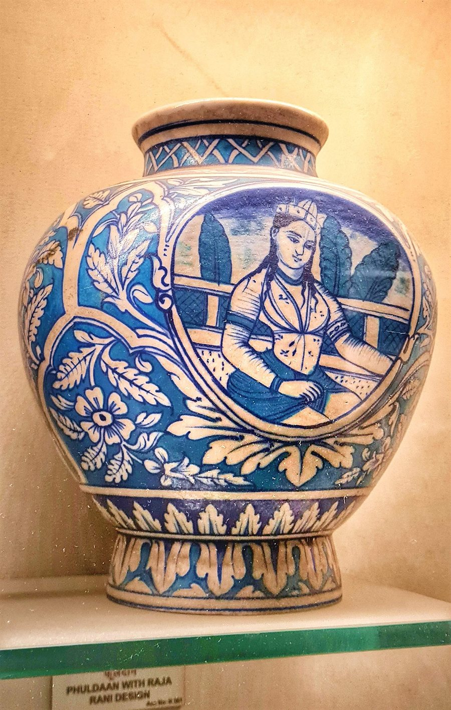
Jaipur blue pottery vase with Raja-Rani design
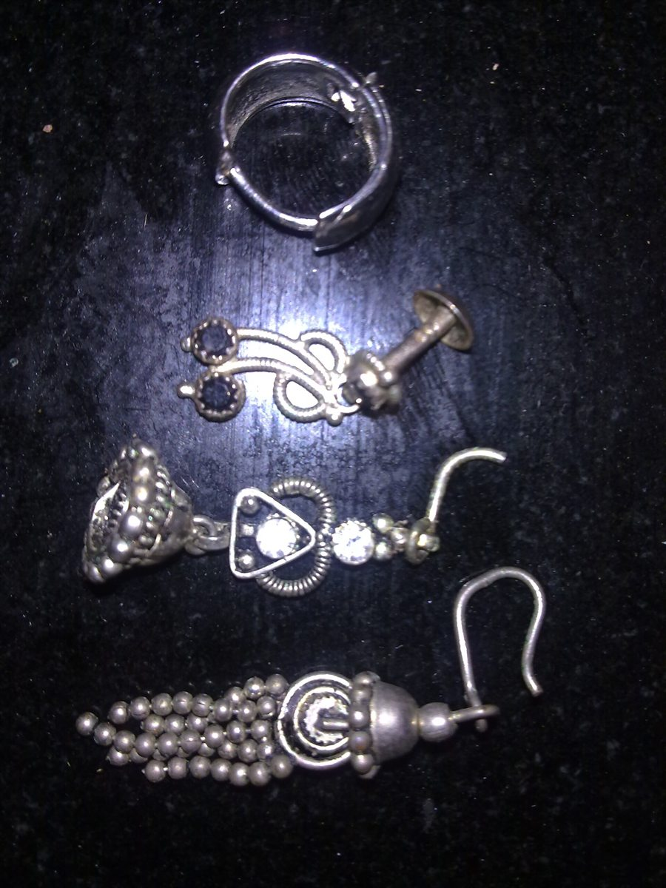
Indian black metal jewellery
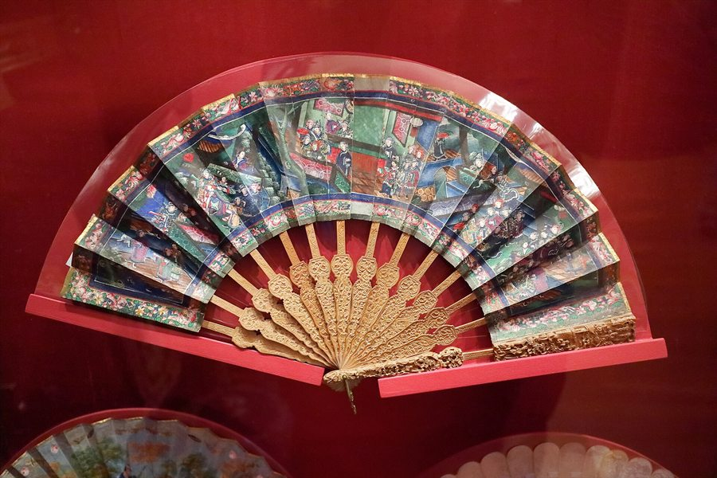
Abanico, Museo del Romanticismo, Madrid
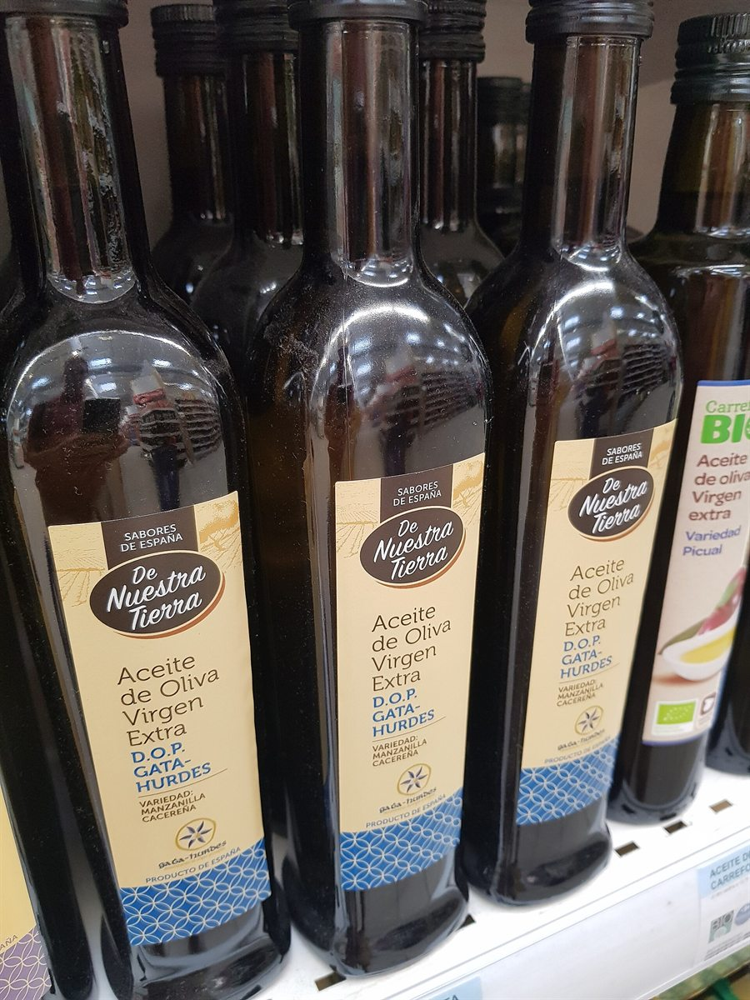
DOP Gata-Hurdes olive oil
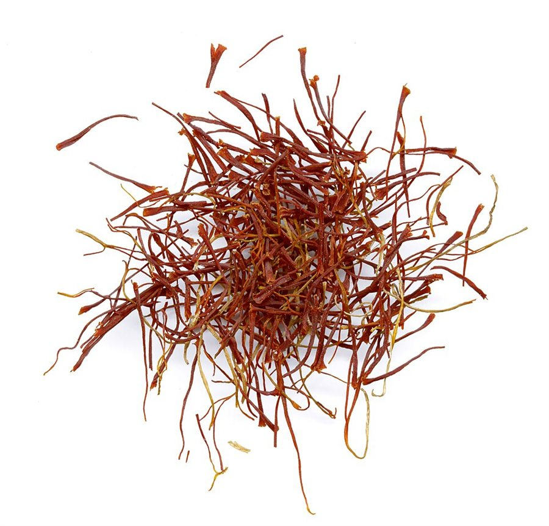
Iran saffron threads
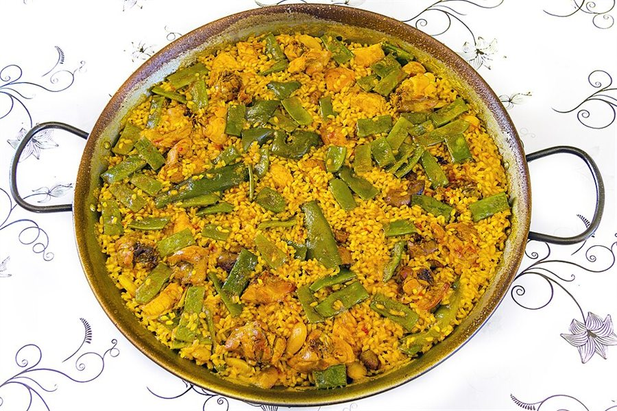
Paella Valenciana
Typography
Open Font License
Bricolage Grotesque, DM Sans, Instrument Serif and Noto Sans Devanagari are served locally from Google Fonts under the SIL Open Font License. The flower mark and all layout, code and copy were made for this prototype.
Build
Made with DeepSeek
The animations, pictures and interactive UI elements — including the loading states — were made and gathered using DeepSeek.